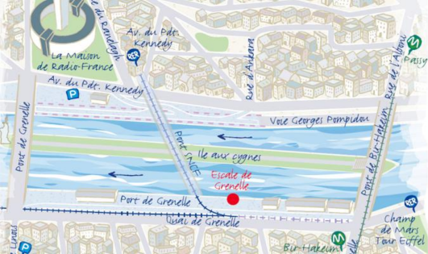

Plan d’accès au quai de Grenelle
En face de l’Île aux Cygnes, profitez du quartier commerçant de Grenelle, de ses cinémas et de ses restaurants. Retrouvez l’atmosphère et l’ambiance d’un village à l’ombre des immeubles du Front de Seine avec vue sur la Tour Eiffel.
Adresse
1, Quai de Grenelle, 75015 PARIS
Références Google Maps
48.852738,2.285269 (ouvre Google Maps)
Accès voiture
Descendre sur le quai depuis le Pont de Grenelle côté Paris 15e (Beaugrenelle). Rouler en direction de la Tour Eiffel. L’escale de Grenelle est située après le pont SNCF. Stationnement non réservé 40/50 places.
Parking
Parking centre commercial Beaugrenelle
19, rue Linois, 75015 PARIS
19, rue Linois, 75015 PARIS
Parking Kennedy / Radio France
1, avenue du Président Kennedy, 75016 PARIS
1, avenue du Président Kennedy, 75016 PARIS
Accès Métro
Ligne 6 - Station Bir Hakeim
Accès RER
Ligne C - Station « Champ de Mars / Tour Eiffel »
Accès Bus
Ligne 70 - Arrêt Pont Grenelle - Place Fernand Forest
